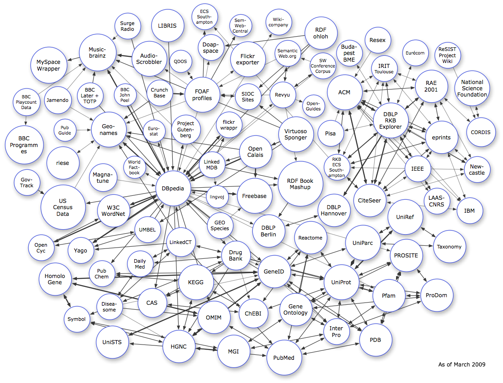

<map name="GraffleExport">
	<area shape=circle coords="457,36,29" href="http://id.ecs.soton.ac.uk/docs/">
	<area shape=poly coords="1082,169,1082,224,1026,224,1026,169,1082,169" href="http://nsf.rkbexplorer.com">
	<area shape=circle coords="1000,123,29" href="http://wiki.rkbexplorer.com/">
	<area shape=circle coords="1074,295,32" href="http://cordis.rkbexplorer.com/">
	<area shape=circle coords="752,373,29" href="http://southampton.rkbexplorer.com">
	<area shape=circle coords="928,117,29" href="http://eurecom.rkbexplorer.com">
	<area shape=circle coords="642,118,29" href="http://ontoworld.org/">
	<area shape=circle coords="374,56,36" href="http://libris.kb.se">
	<area shape=poly coords="1012,281,1012,332,961,332,961,281,1012,281" href="http://eprints.rkbexplorer.com">
	<area shape=poly coords="900,241,900,296,845,296,845,241,900,241" href="http://dblp.rkbexplorer.com">
	<area shape=poly coords="797,178,797,233,742,233,742,178,797,178" href="http://acm.rkbexplorer.com">
	<area shape=poly coords="851,422,851,473,800,473,800,422,851,422" href="http://citeseer.rkbexplorer.com">
	<area shape=poly coords="989,166,989,218,938,218,938,166,989,166" href="http://rae2001.rkbexplorer.com">
	<area shape=circle coords="1066,378,29" href="http://newcastle.rkbexplorer.com">
	<area shape=circle coords="738,297,29" href="http://pisa.rkbexplorer.com">
	<area shape=circle coords="844,89,29" href="http://resex.rkbexplorer.com">
	<area shape=circle coords="1049,470,29" href="http://budapest.rkbexplorer.com">
	<area shape=circle coords="933,377,29" href="http://ieee.rkbexplorer.com">
	<area shape=circle coords="780,118,29" href="http://budapest.rkbexplorer.com">
	<area shape=circle coords="976,449,29" href="http://laas.rkbexplorer.com">
	<area shape=poly coords="625,490,625,542,574,542,574,490,625,490" href="http://www4.wiwiss.fu-berlin.de/dblp/">
	<area shape=circle coords="415,289,32" href="http://www4.wiwiss.fu-berlin.de/gutendata/">
	<area shape=circle coords="671,410,50" href="http://sites.wiwiss.fu-berlin.de/suhl/bizer/bookmashup/">
	<area shape=circle coords="721,146,29" href="http://data.semanticweb.org/">
	<area shape=circle coords="858,152,29" href="http://irit.rkbexplorer.com">
	<area shape=poly coords="771,444,771,495,720,495,720,444,771,444" href="http://dblp.l3s.de/d2r/">
	<area shape=poly coords="688,272,688,327,633,327,633,272,688,272" href="http://virtuoso.openlinksw.com/dav/wiki/Main/VirtSponger">
	<area shape=poly coords="596,409,596,465,541,465,541,409,596,409" href="http://freebase.com">
	<area shape=poly coords="414,393,414,448,359,448,359,393,414,393" href="http://dbpedia.org/">
	<area shape=circle coords="180,559,29" href="http://www.mpi-inf.mpg.de/~suchanek/downloads/yago">
	<area shape=circle coords="329,513,29" href="http://www.umbel.org/">
	<area shape=poly coords="112,533,112,574,71,574,71,533,112,533" href="http://www.cycfoundation.org/">
	<area shape=poly coords="279,445,279,496,227,496,227,445,279,445" href="http://www.w3.org/TR/wordnet-rdf/">
	<area shape=poly coords="742,47,742,99,691,99,691,47,742,47" href="http://rdfohloh.wikier.org">
	<area shape=circle coords="144,290,24" href="http://www.johngoodwin.me.uk/pubs/">
	<area shape=circle coords="403,136,24" href="http://qdos.com/">
	<area shape=circle coords="622,48,29" href="http://dbpedia.openlinksw.com/wikicompany/resource/Wikicompany">
	<area shape=circle coords="700,236,24" href="http://openguides.org/">
	<area shape=circle coords="537,56,24" href="http://projects.semwebcentral.org/">
	<area shape=circle coords="356,207,29" href="http://cb.semsol.org">
	<area shape=circle coords="451,211,39" href="http://www.foaf-project.org/">
	<area shape=poly coords="581,104,581,159,526,159,526,104,581,104" href="http://apassant.net/blog/2007/12/18/rdf-export-flickr-profiles-foaf-and-sioc/">
	<area shape=circle coords="471,105,29" href="http://doapspace.org/">
	<area shape=circle coords="554,215,29" href="http://sioc-project.org/">
	<area shape=circle coords="631,211,29" href="http://revyu.com/">
	<area shape=poly coords="596,313,596,364,545,364,545,313,596,313" href="http://www.opencalais.com">
	<area shape=circle coords="511,278,29" href="http://www4.wiwiss.fu-berlin.de/flickrwrappr/">
	<area shape=circle coords="344,292,24" href="http://www4.wiwiss.fu-berlin.de/eurostat/">
	<area shape=circle coords="300,373,24" href="http://www4.wiwiss.fu-berlin.de/factbook/">
	<area shape=circle coords="485,439,24" href="http://www.lingvoj.org/">
	<area shape=poly coords="270,261,270,317,215,317,215,261,270,261" href="http://www.geonames.org/ontology/">
	<area shape=poly coords="166,338,166,389,114,389,114,338,166,338" href="http://riese.joanneum.at/">
	<area shape=poly coords="176,427,176,498,105,498,105,427,176,427" href="http://www.rdfabout.com/demo/census/">
	<area shape=circle coords="60,407,29" href="http://www.govtrack.us/">
	<area shape=circle coords="59,227,30" href="http://dbtune.org/bbc/playcount">
	<area shape=circle coords="279,211,24" href="http://dbtune.org/bbc/peel/">
	<area shape=circle coords="473,368,29" href="http://www.linkedmdb.org">
	<area shape=poly coords="361,103,361,158,305,158,305,103,361,103" href="http://dbtune.org/last-fm/">
	<area shape=poly coords="137,116,137,173,79,173,79,116,137,116" href="http://dbtune.org/myspace">
	<area shape=circle coords="285,57,29" href="http://www.surgeradio.co.uk">
	<area shape=poly coords="221,193,221,234,180,234,180,193,221,193" href="http://bbc-hackday.dyndns.org:2825/">
	<area shape=circle coords="230,396,31" href="http://dbtune.org/magnatune/">
	<area shape=circle coords="217,116,41" href="http://dbtune.org/musicbrainz">
	<area shape=circle coords="53,323,42" href="http://www.bbc.co.uk/programmes">
	<area shape=circle coords="129,223,30" href="http://dbtune.org/jamendo/">
	<area shape=circle coords="491,504,29" href="http://www.geospecies.org">
	<area shape=poly coords="276,739,276,790,225,790,225,739,276,739" href="http://unists.bio2rdf.org">
	<area shape=poly coords="547,759,547,811,496,811,496,759,547,759" href="http://mgi.bio2rdf.org">
	<area shape=circle coords="227,611,29" href="http://pubchem.bio2rdf.org">
	<area shape=poly coords="148,598,148,649,97,649,97,598,148,598" href="http://homologene.bio2rdf.org">
	<area shape=poly coords="686,666,686,717,635,717,635,666,686,666" href="http://go.bio2rdf.org">
	<area shape=circle coords="907,571,36" href="http://prosite.bio2rdf.org">
	<area shape=poly coords="1001,634,1001,685,950,685,950,634,1001,634" href="http://prodom.bio2rdf.org">
	<area shape=poly coords="933,457,933,512,877,512,877,457,933,457" href="http://uniref.bio2rdf.org">
	<area shape=poly coords="838,514,838,570,783,570,783,514,838,514" href="http://uniparc.bio2rdf.org">
	<area shape=circle coords="527,571,32" href="http://www4.wiwiss.fu-berlin.de/drugbank/">
	<area shape=circle coords="751,741,29" href="http://interpro.bio2rdf.org">
	<area shape=circle coords="399,774,36" href="http://hgnc.bio2rdf.org">
	<area shape=circle coords="340,677,32" href="http://cas.bio2rdf.org">
	<area shape=circle coords="244,685,29" href="http://www4.wiwiss.fu-berlin.de/diseasome/">
	<area shape=circle coords="313,589,29" href="http://www4.wiwiss.fu-berlin.de/dailymed/">
	<area shape=circle coords="566,700,32" href="http://chebi.bio2rdf.org/sparql">
	<area shape=circle coords="171,713,29" href="http://symbol.bio2rdf.org">
	<area shape=circle coords="839,760,36" href="http://pdb.bio2rdf.org">
	<area shape=circle coords="477,709,36" href="http://omim.bio2rdf.org">
	<area shape=circle coords="762,631,39" href="http://uniprot.bio2rdf.org">
	<area shape=circle coords="868,661,36" href="http://pfam.bio2rdf.org">
	<area shape=poly coords="638,581,638,632,587,632,587,581,638,581" href="http://geneid.bio2rdf.org">
	<area shape=poly coords="662,771,662,827,607,827,607,771,662,771" href="http://pubmed.bio2rdf.org">
	<area shape=poly coords="465,603,465,658,410,658,410,603,465,603" href="http://kegg.bio2rdf.org">
	<area shape=poly coords="1030,525,1030,576,978,576,978,525,1030,525" href="http://taxonomy.bio2rdf.org">
	<area shape=poly coords="719,505,719,556,668,556,668,505,719,505" href="http://reactome.bio2rdf.org">
	<area shape=circle coords="404,541,32" href="http://linkedct.org">
</map>

